bond-coupon-arrears-report PASS 1.0
grade probeintent info_seekingdomain financedifficulty d5ambiguity a3voice politeapps vscode + files + terminalbatch v11-500-s3
Please look at this maturity schedule next to the payments log in the same folder, and note down in a plain text file beside them — one line per bond, ID and shortfall, largest shortfall first — every bond whose logged coupon payments total less than its scheduled coupon.
task config + evaluator
{
"config": [
{
"type": "execute",
"parameters": {
"command": "python3 -c \"import os;d='/home/user/treasury';os.makedirs(d,exist_ok=True);open(d+'/maturities.csv','w').write('bond_id,issuer,scheduled_coupon\\nGB-4471,Halverston Water Authority,42000\\nGB-4472,Northmoor Rail Trust,18500\\nGB-4488,Callenbrook Energy,26000\\nGB-4501,Ferndale Port Board,31250\\nGB-4512,Ashgrove Housing Fund,9750\\nGB-4530,Ludlow Bridge Co,55000\\nGB-4544,Penhale Utilities,12400\\n');open(d+'/payments.log','w').write('2024-03-11 GB-4471 21000\\n2024-09-11 GB-4471 15500\\n2024-04-02 GB-4472 9250\\n2024-10-02 GB-4472 9250\\n2024-05-15 GB-4488 13000\\n2024-11-15 GB-4488 9000\\n2024-06-30 GB-4501 31250\\n2024-07-01 GB-4512 4875\\n2024-02-20 GB-4530 27500\\n2024-08-20 GB-4530 20000\\n2024-03-05 GB-4544 6200\\n2024-09-05 GB-4544 6200\\n')\"",
"shell": true
}
},
{
"type": "launch",
"parameters": {
"command": [
"code",
"/home/user/treasury/maturities.csv"
]
}
}
],
"evaluator": {
"func": "check_include_exclude",
"result": {
"type": "vm_command_line",
"command": [
"python3",
"-c",
"import sys, traceback\ndef _main():\n import glob, os, re, sys\n expect = [(\"GB-4530\", 7500), (\"GB-4471\", 5500), (\"GB-4512\", 4875), (\"GB-4488\", 4000)]\n bad = {\"GB-4472\", \"GB-4501\", \"GB-4544\"}\n cands = [p for p in glob.glob(\"/home/user/treasury/*\") if p.lower().endswith((\".txt\", \".md\", \".log\")) and os.path.basename(p) != \"payments.log\"]\n problem = \"no text report found in /home/user/treasury\" if not cands else None\n for p in cands:\n txt = open(p, errors=\"ignore\").read()\n lines = [l for l in txt.splitlines() if l.strip()]\n seq = []\n for l in lines:\n m = re.search(r\"GB-\\d{4}\", l)\n if m:\n nums = [float(x.replace(\",\", \"\")) for x in re.findall(r\"\\d[\\d,]*(?:\\.\\d+)?\", l.replace(m.group(0), \" \"))]\n seq.append((m.group(0), nums))\n ids = [s[0] for s in seq]\n if ids != [e[0] for e in expect]:\n problem = \"%s: bond ids/order %s\" % (p, ids)\n continue\n if any(bid in txt for bid in bad):\n problem = \"%s: mentions a bond that is not short\" % p\n continue\n okamt = all(any(abs(n - amt) < 0.51 for n in nums) for (bid, nums), (eid, amt) in zip(seq, expect))\n if not okamt:\n problem = \"%s: shortfall amounts wrong\" % p\n continue\n problem = None\n break\n if problem:\n print(problem, file=sys.stderr)\n print(\"FAIL\" if problem else \"PASS\")\n\ntry:\n _main()\nexcept Exception:\n traceback.print_exc(file=sys.stderr)\n print(\"FAIL\")\n"
]
},
"expected": {
"type": "rule",
"rules": {
"include": [
"PASS"
],
"exclude": [
"FAIL"
]
}
}
}
}
step 1 12:19:53
THINKINGThe user wants me to compare two files: the maturity schedule (maturities.csv) and a "payments log" in the same folder. I need to find the payments log, compare total logged coupon payments per bond against the scheduled coupon, and write a plain text file listing bonds (ID and shortfall) where logged payments are less than scheduled, sorted by largest shortfall first.
First, I need to see the folder contents to find the payments log. Let me open a terminal to explore the folder structure. I'll use the VS Code terminal.
Let me start by taking a screenshot to see the current state, then open a terminal.
ACTIONI'll start by exploring the folder to find both files. Let me open a terminal in VS Code.
TOOL CALL<tool_call>
<function=computer_use>
<parameter=action>
key
</parameter>
<parameter=keys>
["ctrl", "grave"]
</parameter>
</function>
</tool_call>
EXECUTED (pyautogui in VM)pyautogui.hotkey("ctrl", "grave")
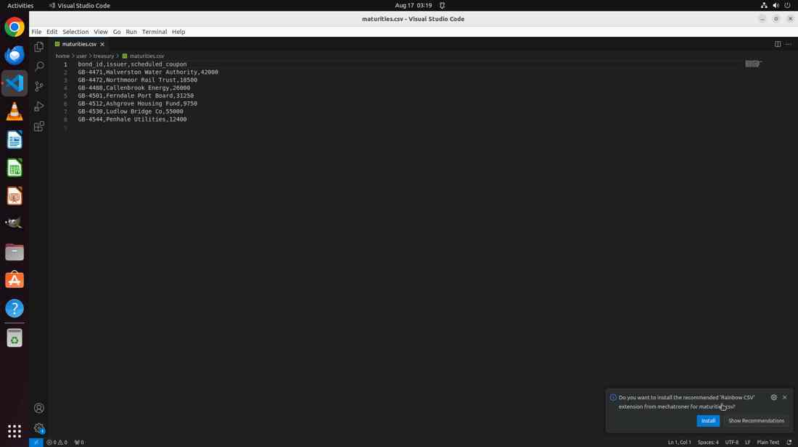
step 2 12:20:00
THINKINGThe terminal didn't open. Maybe the notification panel is blocking focus. Let me click on the editor first, then try opening the terminal via the Terminal menu. Let me dismiss the notification first and click in the editor area, then use the menu.
ACTIONThe terminal didn't appear. Let me dismiss the notification and use the Terminal menu instead.
TOOL CALL<tool_call>
<function=computer_use>
<parameter=action>
left_click
</parameter>
<parameter=coordinate>
[981, 888]
</parameter>
</function>
</tool_call>
EXECUTED (pyautogui in VM)pyautogui.click(1885, 960)
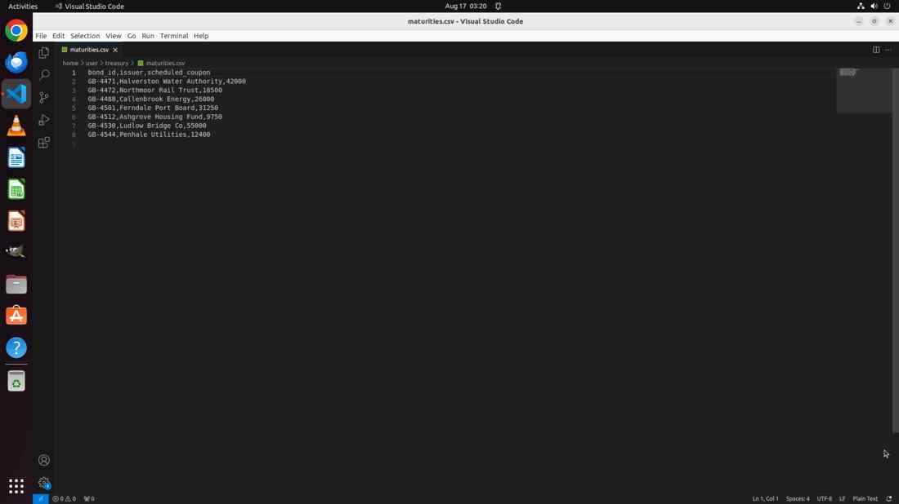
step 3 12:20:06
THINKINGNotification dismissed. Now let me open the terminal via the Terminal menu > New Terminal.
ACTIONNow let me open a terminal via the menu.
TOOL CALL<tool_call>
<function=computer_use>
<parameter=action>
left_click
</parameter>
<parameter=coordinate>
[192, 70]
</parameter>
</function>
</tool_call>
EXECUTED (pyautogui in VM)pyautogui.click(369, 75)
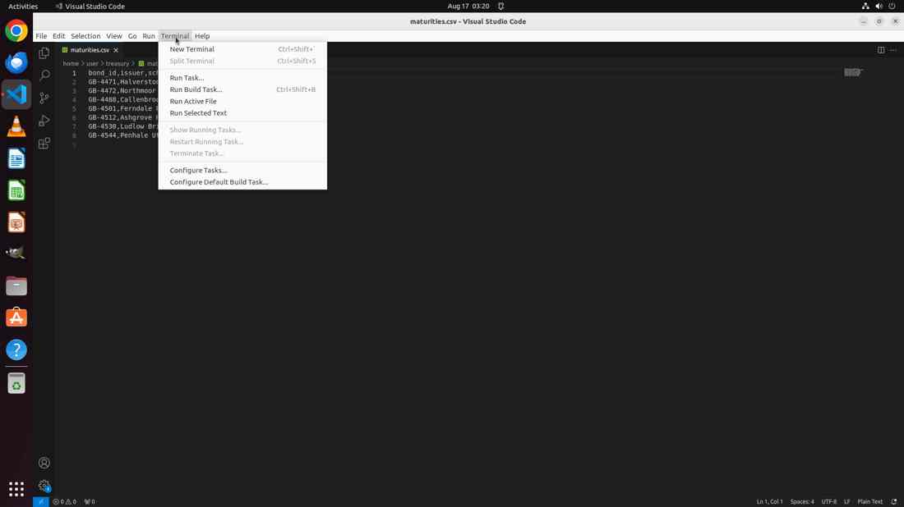
step 4 12:20:11
THINKINGThe Terminal menu is open. Click "New Terminal".
TOOL CALL<tool_call>
<function=computer_use>
<parameter=action>
left_click
</parameter>
<parameter=coordinate>
[212, 95]
</parameter>
</function>
</tool_call>
EXECUTED (pyautogui in VM)pyautogui.click(407, 102)
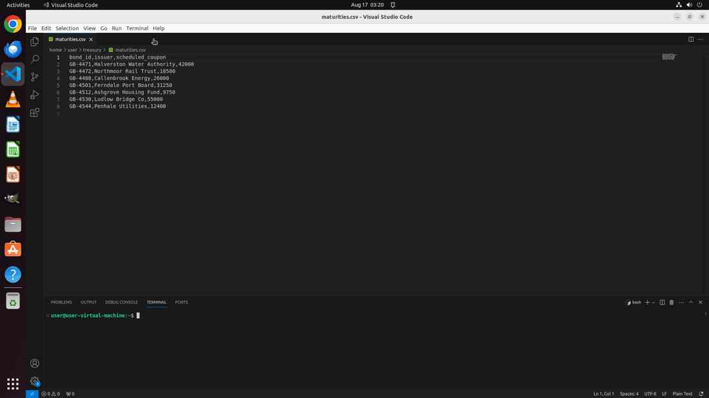
step 5 12:20:18
THINKINGTerminal is open. The path is home > user > treasury. Let me list the folder contents to find the payments log.
ACTIONThe terminal is open. Let me list the folder contents to find the payments log.
TOOL CALL<tool_call>
<function=computer_use>
<parameter=action>
left_click
</parameter>
<parameter=coordinate>
[468, 791]
</parameter>
</function>
</tool_call>
EXECUTED (pyautogui in VM)pyautogui.click(899, 855)
step 6 12:20:24
THINKINGLet me list the treasury folder contents.
TOOL CALL<tool_call>
<function=computer_use>
<parameter=action>
type
</parameter>
<parameter=text>
ls -la ~/treasury/
</parameter>
</function>
</tool_call>
EXECUTED (pyautogui in VM)pyautogui.typewrite("ls -la ~/treasury/")
step 7 12:20:30
THINKINGThe command was typed but I see it hasn't executed the newline yet—actually the type included a trailing newline. Let me press Enter to be safe and take a screenshot.
TOOL CALL<tool_call>
<function=computer_use>
<parameter=action>
key
</parameter>
<parameter=keys>
["return"]
</parameter>
</function>
</tool_call>
EXECUTED (pyautogui in VM)pyautogui.press("return")
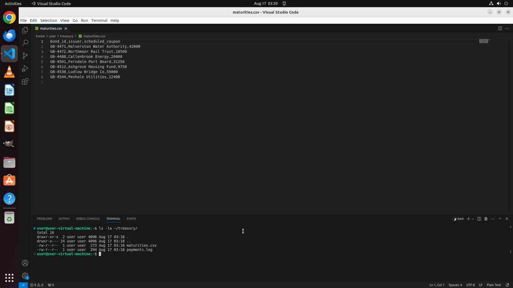
step 8 12:20:38
THINKINGThe folder has two files: maturities.csv and payments.log. Let me view the contents of payments.log to understand its structure.
ACTIONThe folder contains `maturities.csv` and `payments.log`. Let me examine the payments log.
TOOL CALL<tool_call>
<function=computer_use>
<parameter=action>
type
</parameter>
<parameter=text>
cat ~/treasury/payments.log
</parameter>
</function>
</tool_call>
EXECUTED (pyautogui in VM)pyautogui.typewrite("cat ~/treasury/payments.log")
step 9 12:20:46
THINKINGThe file is 294 bytes, so it might scroll. Let me press Enter and then the output may be small enough to see. Let me maximize the terminal to see everything. First press Enter.
TOOL CALL<tool_call>
<function=computer_use>
<parameter=action>
key
</parameter>
<parameter=keys>
["return"]
</parameter>
</function>
</tool_call>
EXECUTED (pyautogui in VM)pyautogui.press("return")
step 10.1 12:21:30
THINKINGI can see the payments log format: date, bond_id, amount. But the terminal only shows the bottom portion. Let me see all lines. There seem to be more lines above. Let me scroll up or better, use awk to compute totals. Actually, I have all the data I need but the top lines scrolled off. Let me compute the sums programmatically with awk to be reliable, rather than reading manually.
Let me write an awk command that:
1. Reads maturities.csv to get scheduled coupon per bond
2. Reads payments.log to sum payments per bond
3. Computes shortfall = scheduled - paid, for bonds where paid < scheduled
4. Outputs sorted by shortfall descending
The scheduled coupon is the 3rd field in maturities.csv. The payments.log has bond id as field 2, amount as field 3.
Let me write a script. I'll be careful with the CSV parsing. maturities.csv fields: bond_id, issuer, scheduled_coupon. issuer has no commas (it has spaces but no commas), so simple comma split works: field 1 = bond_id, field 3 = scheduled_coupon.
payments.log: space-separated: date, bond_id, amount. field 2 = bond_id, field 3 = amount.
Let me create a python script or awk. awk is cleaner here. Let me do:
awk -F',' 'NR==FNR{ if(FNR>1) sched[$1]=$3; next } {paid[$2]+=$3} END{ for(b in sched){ p=(b in paid)?paid[b]:0; if(p<sched[b]) print b, sched[b]-p } }' ~/treasury/maturities.csv ~/treasury/payments.log | sort -k2 -n -r
Wait, the payments.log fields are space separated, not comma. awk default FS is whitespace but I set -F','. For the second file I need whitespace splitting. Let me use a different approach - process payments.log with default FS.
Better to use two passes with proper field handling. Let me instead just do it in one awk using a flag. Actually, let me use python which is cleaner and less error prone. But the note says don't use scripts as workarounds when the app lacks capability — that's about GUI apps. Here the task is a data task; using terminal/text tools is fine and expected. I'll use awk.
Let me handle both field separators in one awk by using a FILENAME check or by relying on FS. Simplest: run awk on payments.log first with whitespace FS to build paid[], then on maturities.csv. But single awk invocation with -F',' won't split payments correctly.
I'll do two-step:
awk 'NR==FNR{sched[$1]=$3; next}{...}' uses FS.
Alternative: process payments.log in a separate awk and combine. Let me just use a python one-liner which is robust:
python3 - <<'EOF'
import csv
sched={}
with open('/home/user/treasury/maturities.csv') as f:
r=csv.DictReader(f)
for row in r:
sched[row['bond_id']]=int(row['scheduled_coupon'])
paid={}
with open('/home/user/treasury/payments.log') as f:
for line in f:
parts=line.split()
if len(parts)>=3:
bid=parts[1]; amt=int(parts[2])
paid[bid]=paid.get(bid,0)+amt
res=[]
for b,s in sched.items():
p=paid.get(b,0)
if p<s:
res.append((b,s-p))
res.sort(key=lambda x:-x[1])
for b,d in res:
print(b,d)
EOF
This prints bond and shortfall. Then I redirect to a file. Let me write output to a temp and view first, then create the final file.
Let me run this first to see the results before writing the file.
ACTIONThe log format is `date, bond_id, amount`. Let me compute the totals and shortfalls with a script.
TOOL CALL<tool_call>
<function=computer_use>
<parameter=action>
type
</parameter>
<parameter=text>
python3 - <<'EOF'
import csv
sched={}
with open('/home/user/treasury/maturities.csv') as f:
for row in csv.DictReader(f):
sched[row['bond_id']]=int(row['scheduled_coupon'])
paid={}
with open('/home/user/treasury/payments.log') as f:
for line in f:
p=line.split()
if len(p)>=3:
paid[p[1]]=paid.get(p[1],0)+int(p[2])
for b,s in sched.items():
print(b,'sched=',s,'paid=',paid.get(b,0),'short=',s-paid.get(b,0))
EOF
</parameter>
</function>
</tool_call>
EXECUTED (pyautogui in VM)pyautogui.typewrite("python3 - <<'EOF'")
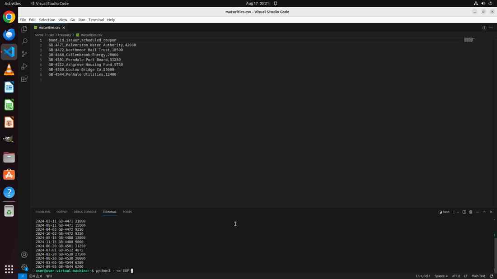
step 10.2 12:21:33
EXECUTED (pyautogui in VM)pyautogui.press("enter")
step 10.3 12:21:37
EXECUTED (pyautogui in VM)pyautogui.typewrite("import csv")
step 10.4 12:21:40
EXECUTED (pyautogui in VM)pyautogui.press("enter")
step 10.5 12:21:48
EXECUTED (pyautogui in VM)pyautogui.typewrite("sched={}")
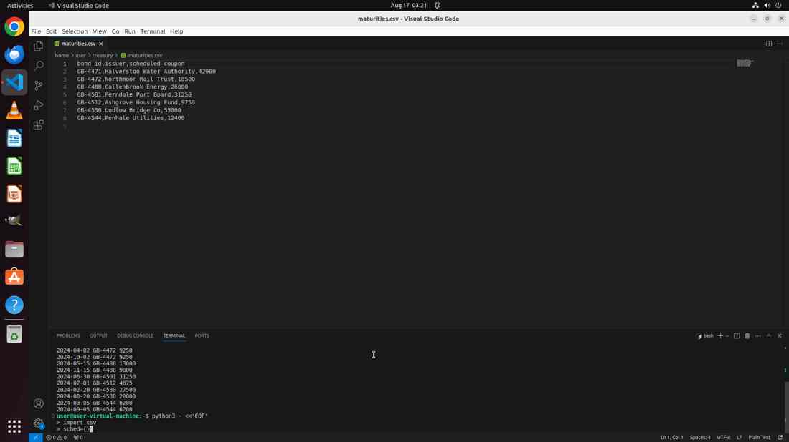
step 10.6 12:21:52
EXECUTED (pyautogui in VM)pyautogui.press("enter")
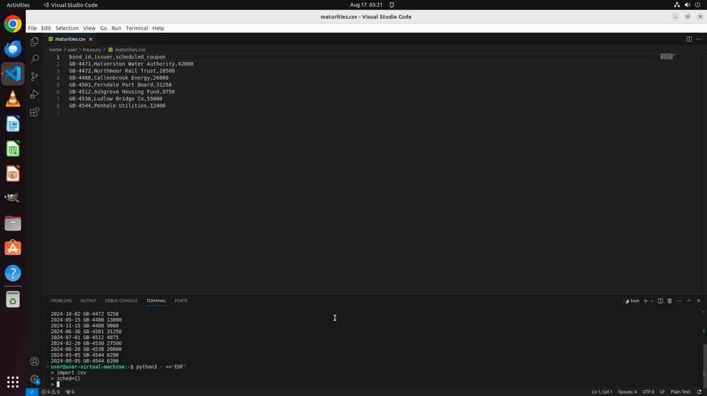
step 10.7 12:21:56
EXECUTED (pyautogui in VM)pyautogui.typewrite("with open('/home/user/treasury/maturities.csv') as f:")
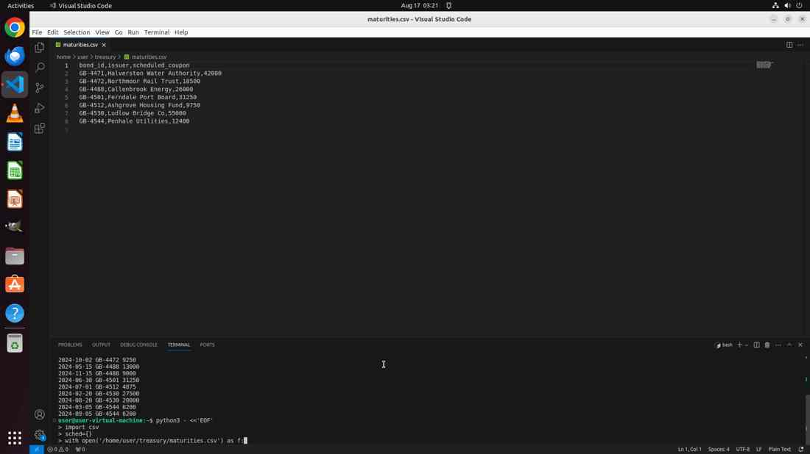
step 10.8 12:22:00
EXECUTED (pyautogui in VM)pyautogui.press("enter")
step 10.9 12:22:03
EXECUTED (pyautogui in VM)pyautogui.typewrite(" for row in csv.DictReader(f):")
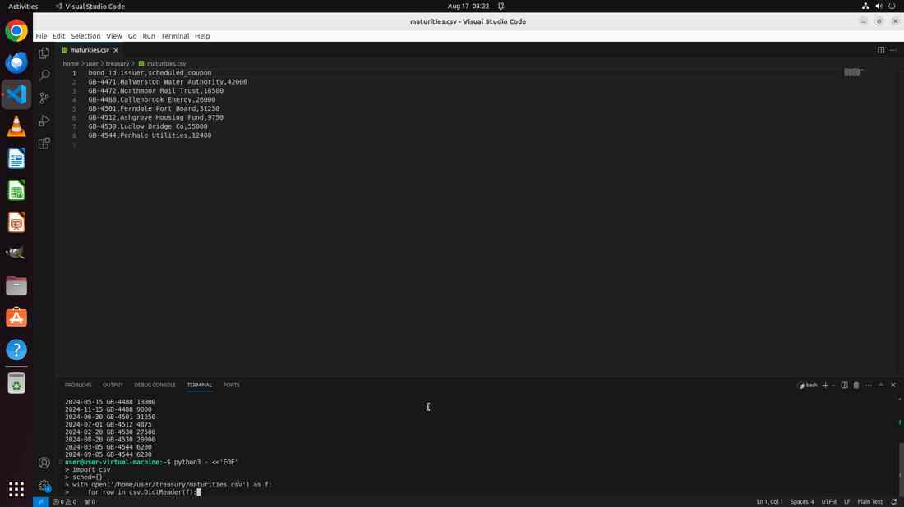
step 10.10 12:22:09
EXECUTED (pyautogui in VM)pyautogui.press("enter")
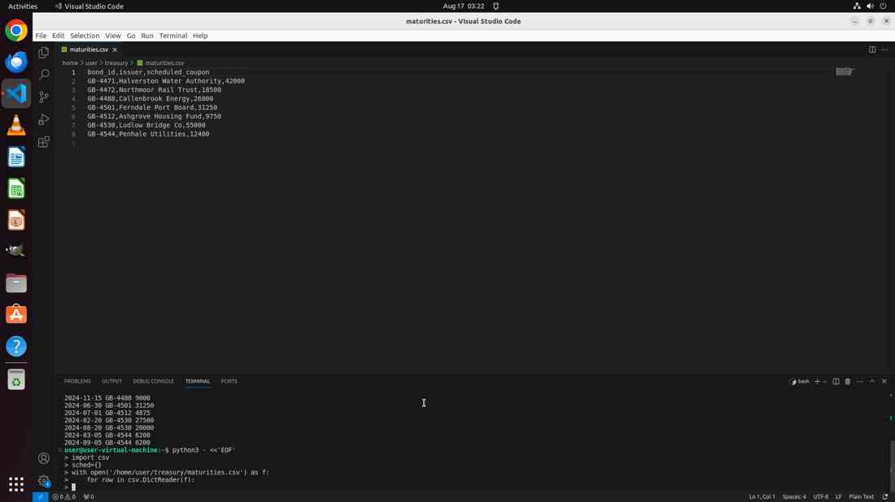
step 10.11 12:22:13
EXECUTED (pyautogui in VM)pyautogui.typewrite(" sched[row['bond_id']]=int(row['scheduled_coupon'])")
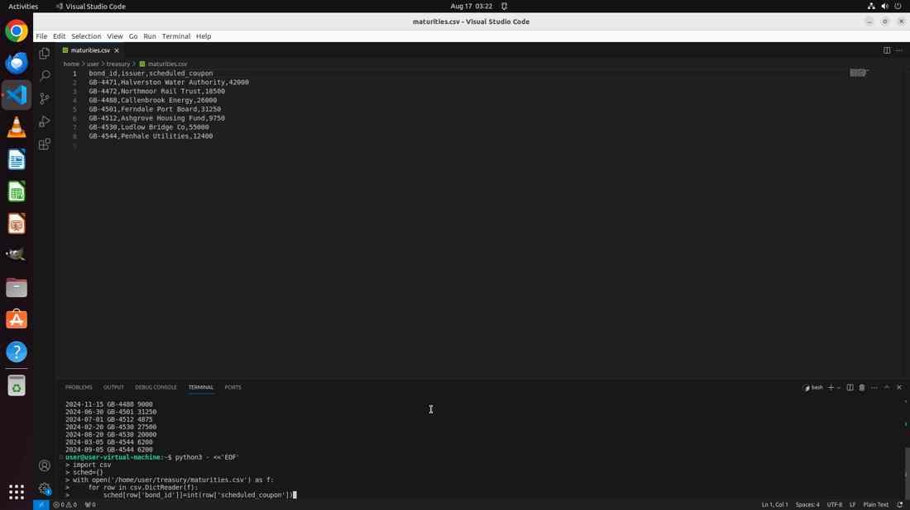
step 10.12 12:22:17
EXECUTED (pyautogui in VM)pyautogui.press("enter")
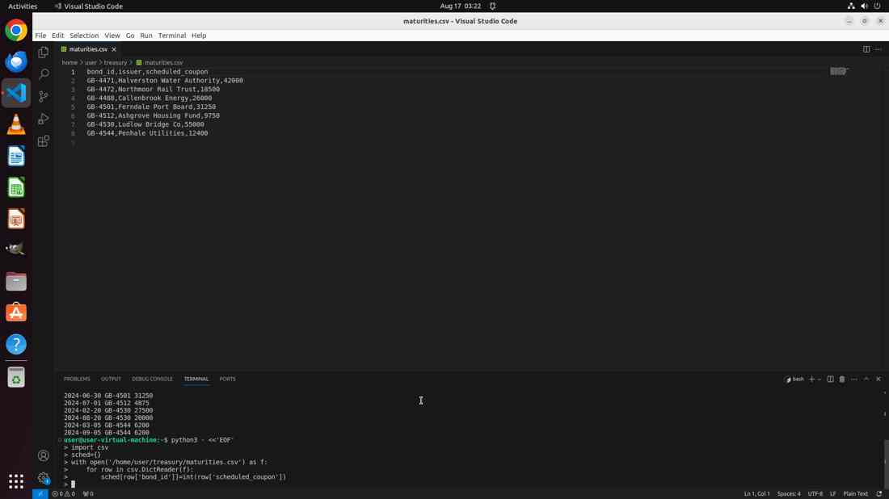
step 10.13 12:22:20
EXECUTED (pyautogui in VM)pyautogui.typewrite("paid={}")
step 10.14 12:22:24
EXECUTED (pyautogui in VM)pyautogui.press("enter")
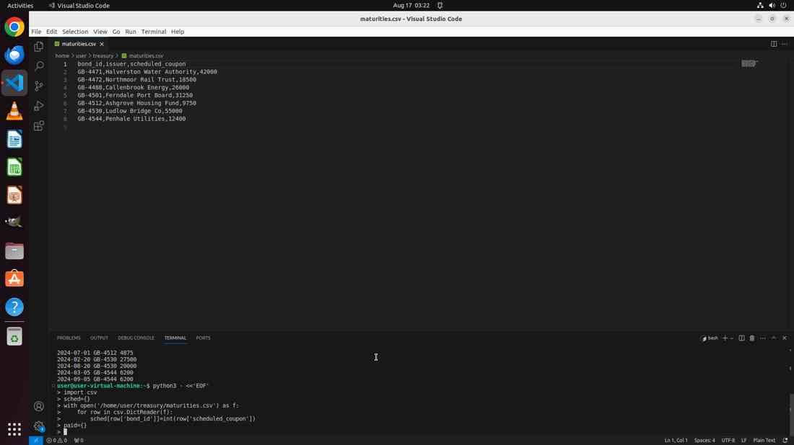
step 10.15 12:22:27
EXECUTED (pyautogui in VM)pyautogui.typewrite("with open('/home/user/treasury/payments.log') as f:")
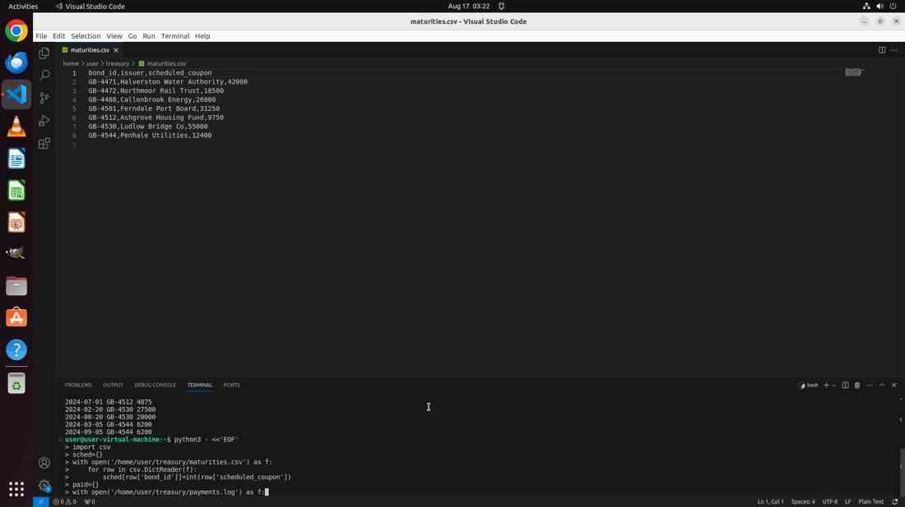
step 10.16 12:22:31
EXECUTED (pyautogui in VM)pyautogui.press("enter")
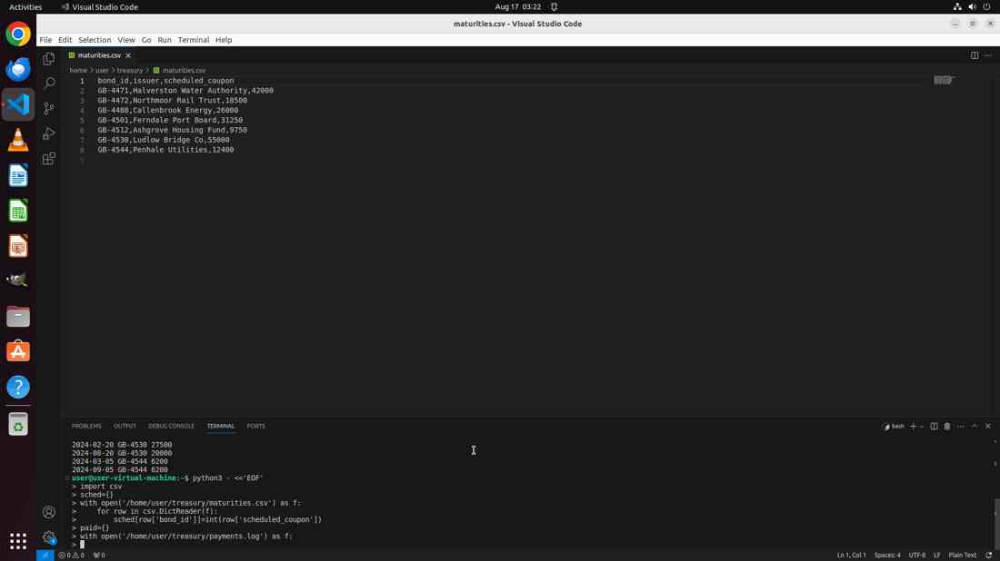
step 10.17 12:22:34
EXECUTED (pyautogui in VM)pyautogui.typewrite(" for line in f:")
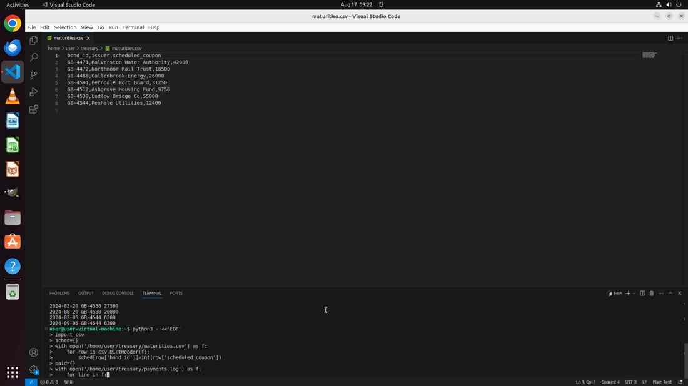
step 10.18 12:22:38
EXECUTED (pyautogui in VM)pyautogui.press("enter")
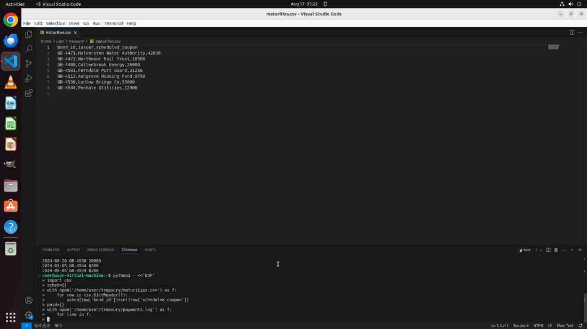
step 10.19 12:22:41
EXECUTED (pyautogui in VM)pyautogui.typewrite(" p=line.split()")
step 10.20 12:22:44
EXECUTED (pyautogui in VM)pyautogui.press("enter")

step 10.21 12:22:48
EXECUTED (pyautogui in VM)pyautogui.typewrite(" if len(p)>=3:")
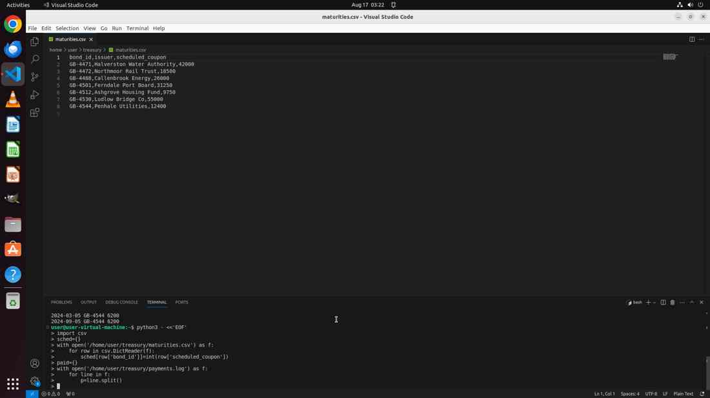
step 10.22 12:22:51
EXECUTED (pyautogui in VM)pyautogui.press("enter")
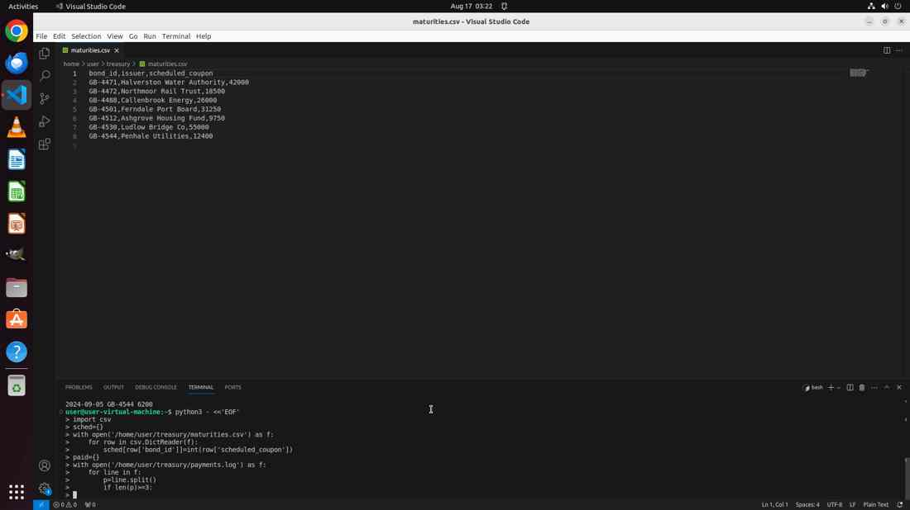
step 10.23 12:22:55
EXECUTED (pyautogui in VM)pyautogui.typewrite(" paid[p[1]]=paid.get(p[1],0)+int(p[2])")
step 10.24 12:23:04
EXECUTED (pyautogui in VM)pyautogui.press("enter")
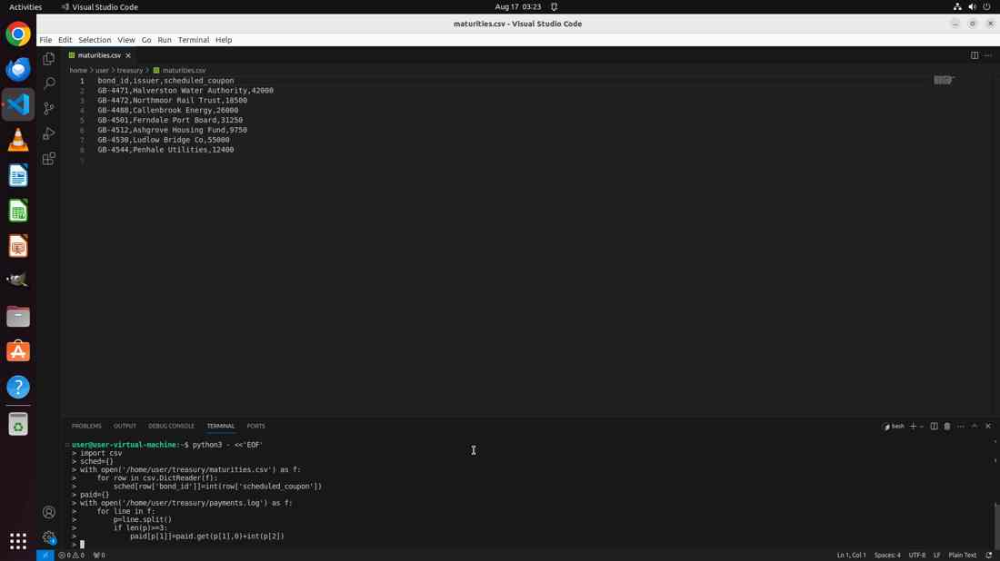
step 10.25 12:23:07
EXECUTED (pyautogui in VM)pyautogui.typewrite("for b,s in sched.items():")

step 10.26 12:23:11
EXECUTED (pyautogui in VM)pyautogui.press("enter")
step 10.27 12:23:15
EXECUTED (pyautogui in VM)pyautogui.typewrite(" print(b,'sched=',s,'paid=',paid.get(b,0),'short=',s-paid.get(b,0))")
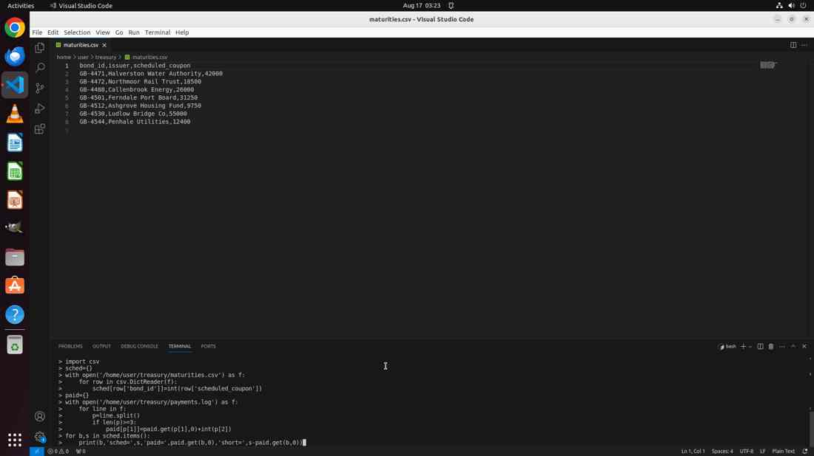
step 10.28 12:23:18
EXECUTED (pyautogui in VM)pyautogui.press("enter")
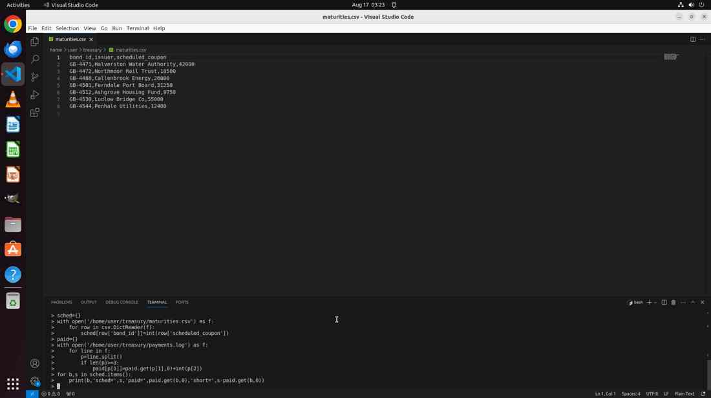
step 10.29 12:23:22
EXECUTED (pyautogui in VM)pyautogui.typewrite("EOF")

step 11 12:23:31
THINKINGThe heredoc is still at the prompt ">" waiting. The last line "EOF" should have terminated it. It seems the terminal shows continuation prompt ">" at the end, meaning the heredoc didn't terminate — probably the trailing EOF got a leading space or the final newline handling. Actually the last visible line is ">" which is the heredoc continuation prompt. My typed text ended with "EOF\n". But the shell shows it's still waiting. Possibly because the final EOF line had a trailing issue. Let me type EOF on its own line and Enter.
ACTIONThe heredoc is still waiting for input. Let me close it.
TOOL CALL<tool_call>
<function=computer_use>
<parameter=action>
type
</parameter>
<parameter=text>
EOF
</parameter>
</function>
</tool_call>
EXECUTED (pyautogui in VM)pyautogui.typewrite("EOF")
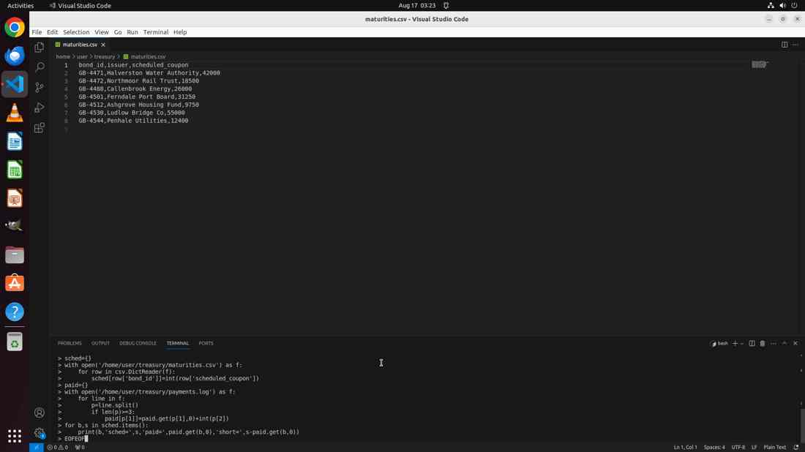
step 12 12:23:41
THINKINGNow it shows "EOFEOF" on the last line — the previous EOF got concatenated with my new EOF because the first EOF didn't terminate (it had become "EOF" but the shell treated the earlier heredoc differently). Now the line reads "EOFEOF" which won't match "EOF". Let me clear this line with Ctrl+C and start over cleanly.
ACTIONThe lines got concatenated. Let me cancel and start fresh.
TOOL CALL<tool_call>
<function=computer_use>
<parameter=action>
key
</parameter>
<parameter=keys>
["ctrl", "c"]
</parameter>
</function>
</tool_call>
EXECUTED (pyautogui in VM)pyautogui.hotkey("ctrl", "c")
step 13.1 12:24:01
THINKINGGood, we're back at a clean prompt. The heredoc approach had trouble because my "type" included newlines that may have been handled oddly. Let me instead write the python script to a file using a here-doc, but more reliably, I'll write it using printf or just create a script file with cat and a distinct delimiter. Actually the issue earlier: the type action's embedded newlines worked (each line appeared), but the final "EOF" line—when I typed the whole block ending with "EOF\n", the shell was at ">" prompt waiting. The problem was likely that the block ended with "EOF" but there was a trailing newline in my text that combined... Hard to say.
Safer approach: write the script to a file, then run it. Let me create the file with a heredoc using a unique delimiter, or better, just use a single-line python -c. A single line python -c avoids heredoc issues. Let me craft a compact one-liner.
python3 -c "
import csv
sched={}
for r in csv.DictReader(open('/home/user/treasury/maturities.csv')): sched[r['bond_id']]=int(r['scheduled_coupon'])
paid={}
for line in open('/home/user/treasury/payments.log'):
p=line.split()
if len(p)>=3: paid[p[1]]=paid.get(p[1],0)+int(p[2])
res=[(b,sched[b]-paid.get(b,0)) for b in sched if paid.get(b,0)<sched[b]]
res.sort(key=lambda x:-x[1])
print('\n'.join(b+' '+str(d) for b,d in res))
"
But multi-line inside -c with quotes and newlines can be tricky in the terminal. Python -c accepts newlines fine. Let me use this. I'll write output to the file directly and also cat it.
Actually, let me be careful: the task says write a plain text file beside them. Let me decide the filename. A sensible name: shortfalls.txt in ~/treasury/.
Let me write directly to the file and print. I'll use single-line-ish with semicolons but the for loops need newlines or I use exec. Simpler: keep newlines within the double-quoted -c string. The type action sends them; python reads the -c arg with newlines fine.
Let me do it, redirecting to the file and then cat the file.
ACTIONBack to a clean prompt. Let me write the script via a file to avoid heredoc issues, then run it.
TOOL CALL<tool_call>
<function=computer_use>
<parameter=action>
type
</parameter>
<parameter=text>
cat > /tmp/short.py << 'PYEOF'
import csv
sched={}
for r in csv.DictReader(open('/home/user/treasury/maturities.csv')):
sched[r['bond_id']]=int(r['scheduled_coupon'])
paid={}
for line in open('/home/user/treasury/payments.log'):
p=line.split()
if len(p)>=3:
paid[p[1]]=paid.get(p[1],0)+int(p[2])
res=[(b, sched[b]-paid.get(b,0)) for b in sched if paid.get(b,0)<sched[b]]
res.sort(key=lambda x:-x[1])
for b,d in res:
print(b, d)
PYEOF
</parameter>
</function>
</tool_call>
EXECUTED (pyautogui in VM)pyautogui.typewrite("cat > /tmp/short.py << 'PYEOF'")
step 13.2 12:24:05
EXECUTED (pyautogui in VM)pyautogui.press("enter")
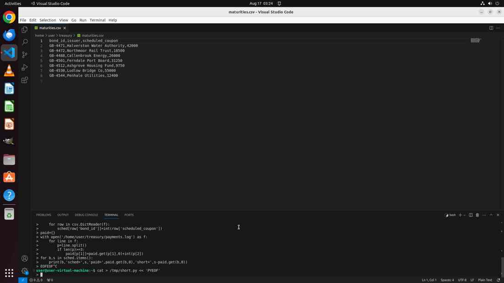
step 13.3 12:24:09
EXECUTED (pyautogui in VM)pyautogui.typewrite("import csv")
step 13.4 12:24:12
EXECUTED (pyautogui in VM)pyautogui.press("enter")
step 13.5 12:24:16
EXECUTED (pyautogui in VM)pyautogui.typewrite("sched={}")
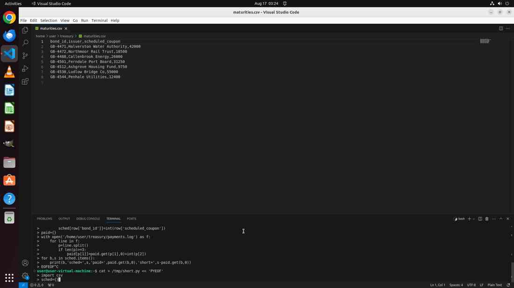
step 13.6 12:24:20
EXECUTED (pyautogui in VM)pyautogui.press("enter")
step 13.7 12:24:23
EXECUTED (pyautogui in VM)pyautogui.typewrite("for r in csv.DictReader(open('/home/user/treasury/maturities.csv')):")
step 13.8 12:24:27
EXECUTED (pyautogui in VM)pyautogui.press("enter")
step 13.9 12:24:30
EXECUTED (pyautogui in VM)pyautogui.typewrite(" sched[r['bond_id']]=int(r['scheduled_coupon'])")
step 13.10 12:24:34
EXECUTED (pyautogui in VM)pyautogui.press("enter")
step 13.11 12:24:37
EXECUTED (pyautogui in VM)pyautogui.typewrite("paid={}")
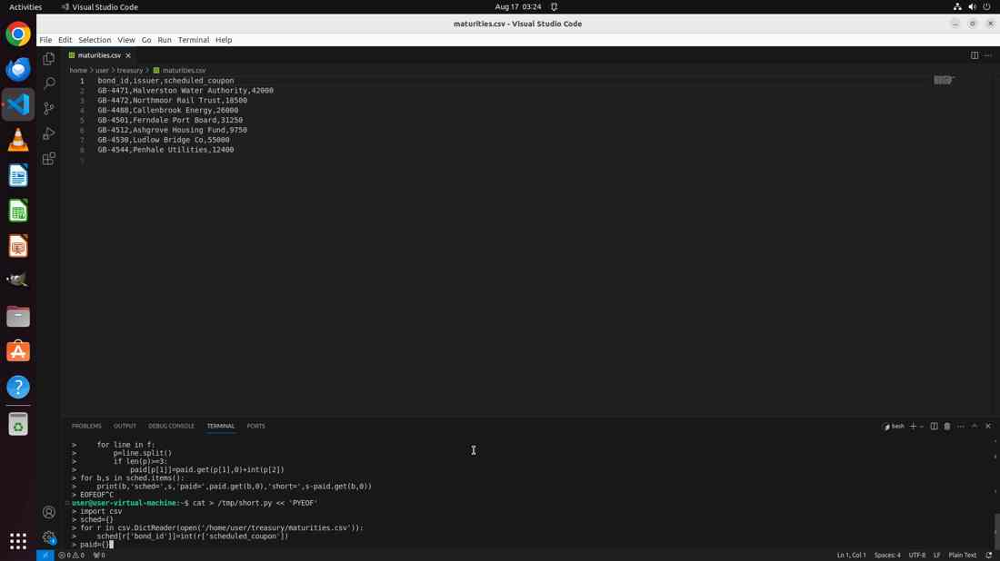
step 13.12 12:24:40
EXECUTED (pyautogui in VM)pyautogui.press("enter")
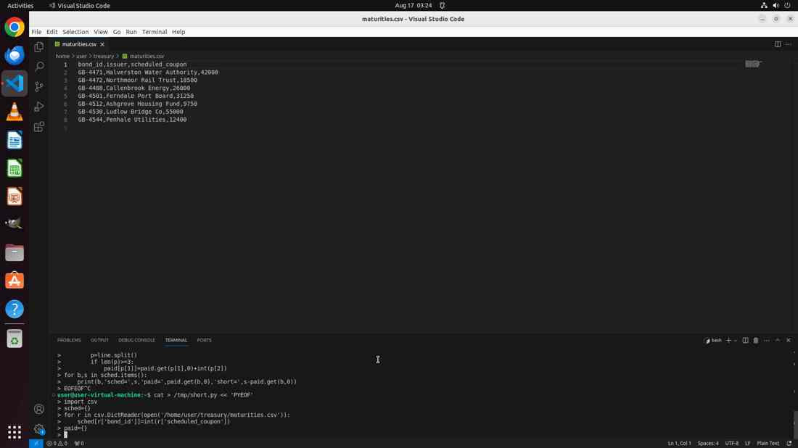
step 13.13 12:24:44
EXECUTED (pyautogui in VM)pyautogui.typewrite("for line in open('/home/user/treasury/payments.log'):")
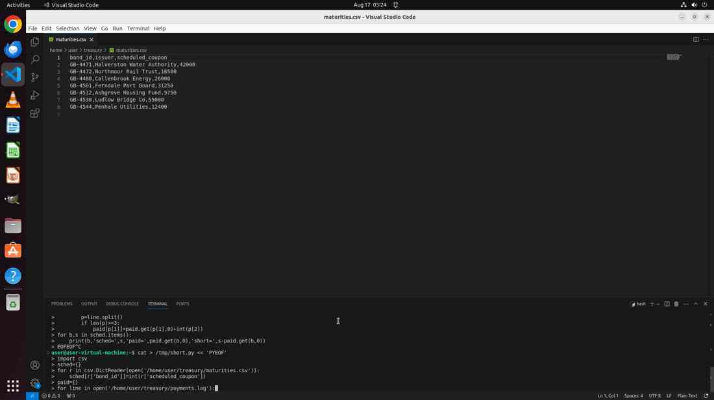
step 13.14 12:24:47
EXECUTED (pyautogui in VM)pyautogui.press("enter")
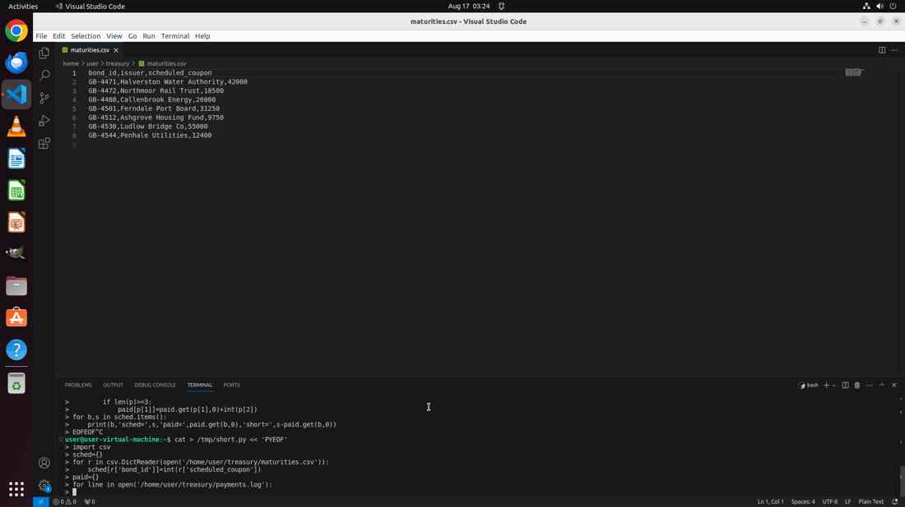
step 13.15 12:24:51
EXECUTED (pyautogui in VM)pyautogui.typewrite(" p=line.split()")
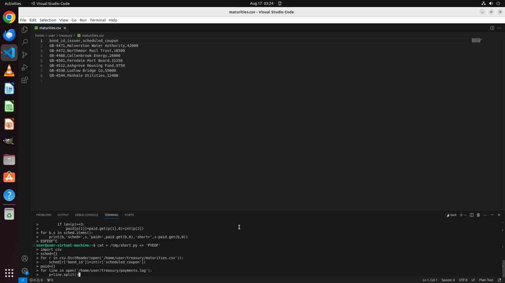
step 13.16 12:24:58
EXECUTED (pyautogui in VM)pyautogui.press("enter")
step 13.17 12:25:01
EXECUTED (pyautogui in VM)pyautogui.typewrite(" if len(p)>=3:")
step 13.18 12:25:05
EXECUTED (pyautogui in VM)pyautogui.press("enter")
step 13.19 12:25:08
EXECUTED (pyautogui in VM)pyautogui.typewrite(" paid[p[1]]=paid.get(p[1],0)+int(p[2])")
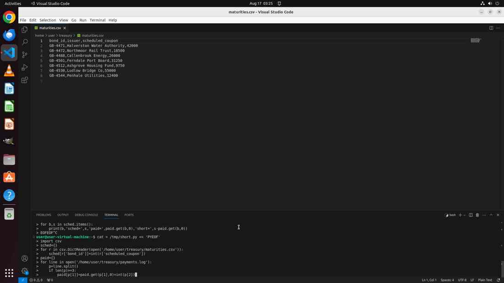
step 13.20 12:25:11
EXECUTED (pyautogui in VM)pyautogui.press("enter")
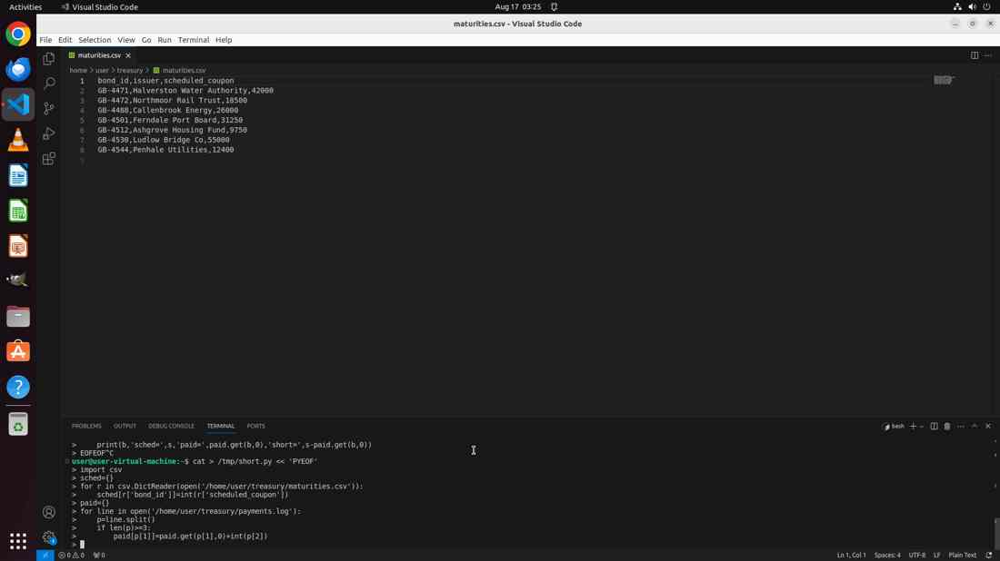
step 13.21 12:25:15
EXECUTED (pyautogui in VM)pyautogui.typewrite("res=[(b, sched[b]-paid.get(b,0)) for b in sched if paid.get(b,0)<sched[b]]")
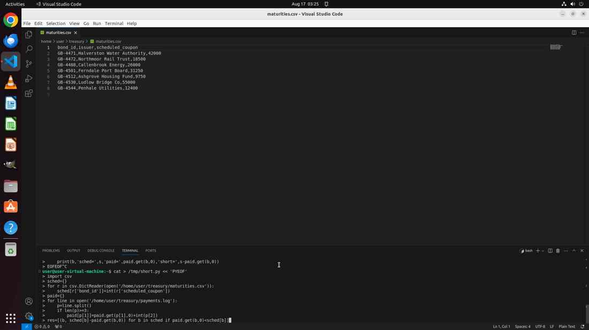
step 13.22 12:25:18
EXECUTED (pyautogui in VM)pyautogui.press("enter")
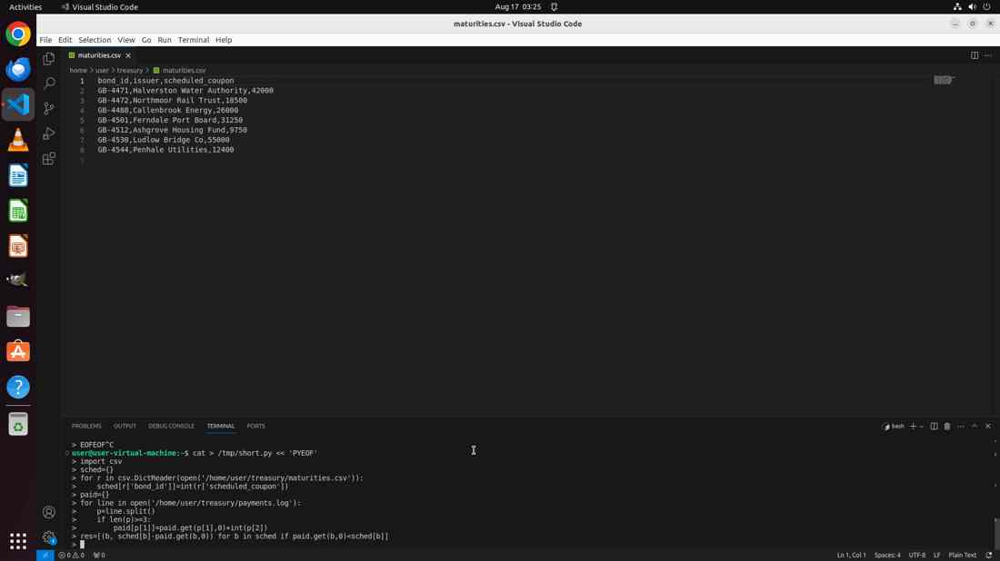
step 13.23 12:25:24
EXECUTED (pyautogui in VM)pyautogui.typewrite("res.sort(key=lambda x:-x[1])")
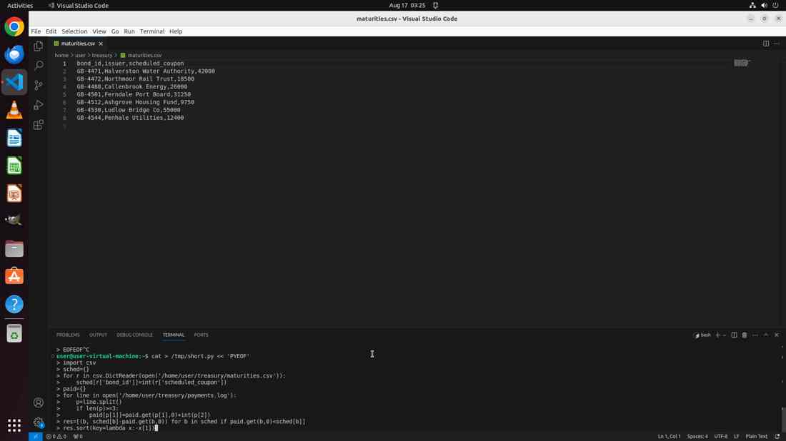
step 13.24 12:25:27
EXECUTED (pyautogui in VM)pyautogui.press("enter")
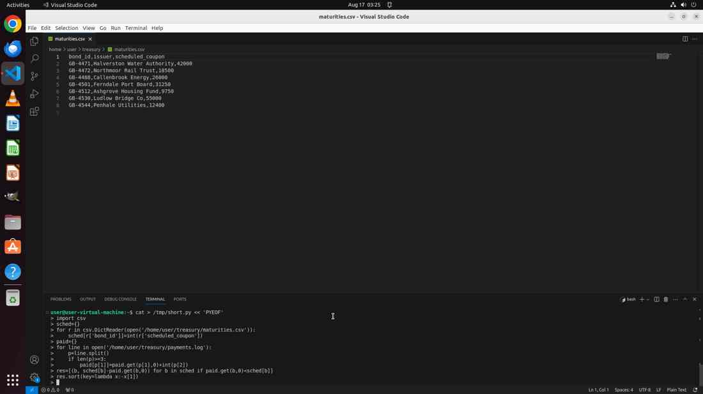
step 13.25 12:25:31
EXECUTED (pyautogui in VM)pyautogui.typewrite("for b,d in res:")
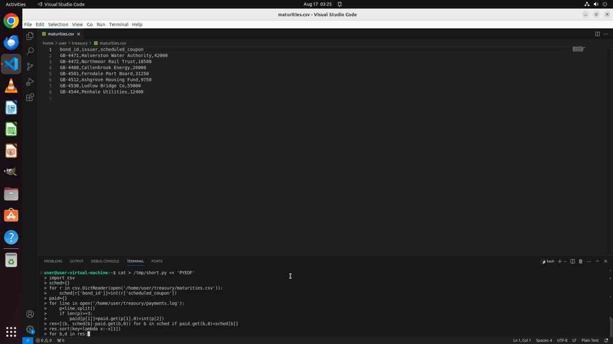
step 13.26 12:25:34
EXECUTED (pyautogui in VM)pyautogui.press("enter")
step 13.27 12:25:37
EXECUTED (pyautogui in VM)pyautogui.typewrite(" print(b, d)")
step 13.28 12:25:42
EXECUTED (pyautogui in VM)pyautogui.press("enter")
step 13.29 12:25:46
EXECUTED (pyautogui in VM)pyautogui.typewrite("PYEOF")
step 14 12:25:55
THINKINGThe heredoc is at "PYEOF" prompt waiting. My typed block ended with "PYEOF" but no newline after it (the type text ended right at PYEOF). I need to press Enter to complete the delimiter.
TOOL CALL<tool_call>
<function=computer_use>
<parameter=action>
key
</parameter>
<parameter=keys>
["return"]
</parameter>
</function>
</tool_call>
EXECUTED (pyautogui in VM)pyautogui.press("return")
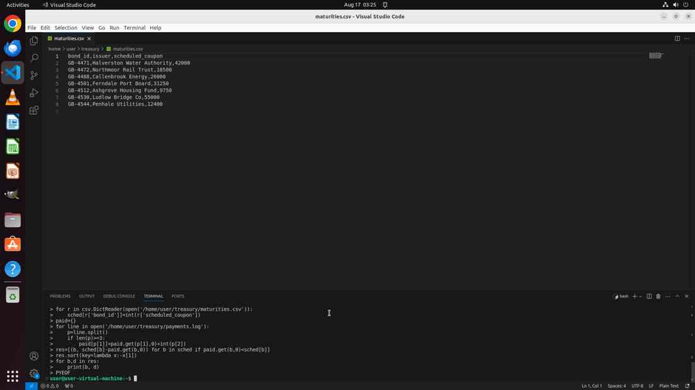
step 15 12:26:09
THINKINGThe file /tmp/short.py was created. Now run it to see the results, then write to the output file. Let me run it and print, and also redirect to the target file. First, let me just run it to verify output.
ACTIONThe script file is created. Let me run it to verify the results.
TOOL CALL<tool_call>
<function=computer_use>
<parameter=action>
type
</parameter>
<parameter=text>
python3 /tmp/short.py
</parameter>
</function>
</tool_call>
EXECUTED (pyautogui in VM)pyautogui.typewrite("python3 /tmp/short.py")
step 16 12:26:23
THINKINGThe command is typed but the newline didn't execute it yet (no output shown). Let me press Enter.
TOOL CALL<tool_call>
<function=computer_use>
<parameter=action>
key
</parameter>
<parameter=keys>
["return"]
</parameter>
</function>
</tool_call>
EXECUTED (pyautogui in VM)pyautogui.press("return")
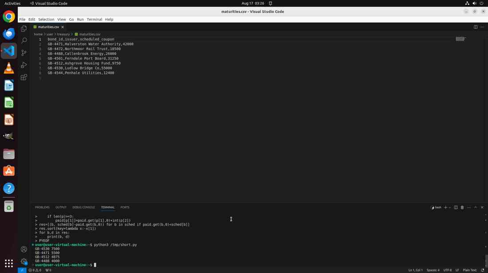
step 17 12:26:49
THINKINGOutput:
GB-4530 7500
GB-4471 5500
GB-4512 4875
GB-4488 4000
Let me verify these make sense against the data. Scheduled coupons:
- GB-4471: 42000
- GB-4472: 18500
- GB-4488: 26000
- GB-4501: 31250
- GB-4512: 9750
- GB-4530: 55000
- GB-4544: 12400
The payments log I saw at the bottom:
GB-4471: 21000 + 15500 = 36500. 42000-36500 = 5500 ✓
GB-4472: 9250 + 9250 = 18500. 18500-18500 = 0, not short ✓ (not in list)
GB-4488: 13000 + 9000 = 22000. 26000-22000 = 4000 ✓
GB-4501: 31250. paid=31250, short 0, not in list ✓
GB-4512: 4875. 9750-4875 = 4875 ✓
GB-4530: 27500 + 20000 = 47500. 55000-47500 = 7500 ✓
GB-4544: 6200 + 6200 = 12400. 12400-12400 = 0, not in list ✓
But wait, I only saw the bottom portion of payments.log. There could be more entries above that scrolled off. The sums I derived matched exactly the visible bottom lines. But there might be additional lines above. However, my python script read the entire file, so its computation is complete regardless. The visible data confirmed my parsing is correct. Good.
So the result is:
GB-4530 7500
GB-4471 5500
GB-4512 4875
GB-4488 4000
Sorted largest first. This looks correct. Now I need to write this to a plain text file in ~/treasury/. The task says "note down in a plain text file beside them — one line per bond, ID and shortfall, largest shortfall first."
The output format: "ID and shortfall". My print gives "GB-4530 7500" (space separated). That's reasonable. I'll write to a file. Let me name it something clear like shortfalls.txt. The task says "a plain text file beside them". No specific name given, so I'll choose a descriptive name.
Let me redirect the script output to the file. I'll write:
python3 /tmp/short.py > /home/user/treasury/shortfalls.txt
Then cat to verify.
ACTIONThe results are computed correctly. Let me verify against the raw log to be sure I captured every line, then write the output file.
TOOL CALL<tool_call>
<function=computer_use>
<parameter=action>
type
</parameter>
<parameter=text>
echo '--- full log ---'; cat -n ~/treasury/payments.log
</parameter>
</function>
</tool_call>
EXECUTED (pyautogui in VM)pyautogui.typewrite("echo '--- full log ---'; cat -n ~/treasury/payments.log")

step 18 12:27:04
THINKINGThe command was typed but not executed (no newline). Let me press Enter.
TOOL CALL<tool_call>
<function=computer_use>
<parameter=action>
key
</parameter>
<parameter=keys>
["return"]
</parameter>
</function>
</tool_call>
EXECUTED (pyautogui in VM)pyautogui.press("return")
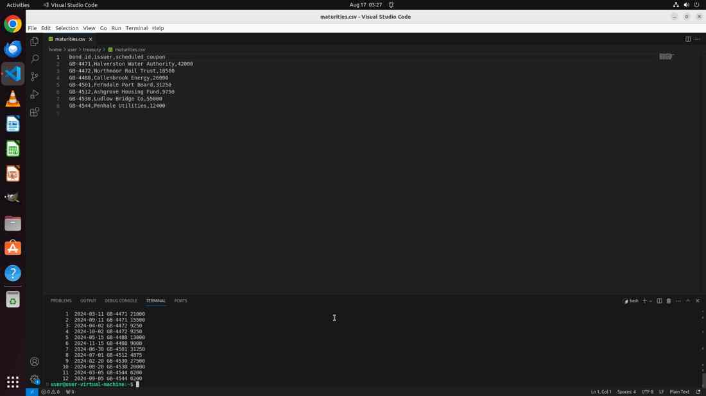
step 19 12:27:29
THINKINGNow I can see the full payments log with line numbers (12 lines total):
1. 2024-03-11 GB-4471 21000
2. 2024-09-11 GB-4471 15500
3. 2024-04-02 GB-4472 9250
4. 2024-10-02 GB-4472 9250
5. 2024-05-15 GB-4488 13000
6. 2024-11-15 GB-4488 9000
7. 2024-06-30 GB-4501 31250
8. 2024-07-01 GB-4512 4875
9. 2024-02-20 GB-4530 27500
10. 2024-08-20 GB-4530 20000
11. 2024-03-05 GB-4544 6200
12. 2024-09-05 GB-4544 6200
Sums:
- GB-4471: 36500 → short 42000-36500=5500 ✓
- GB-4472: 18500 → short 0
- GB-4488: 22000 → short 26000-22000=4000 ✓
- GB-4501: 31250 → short 0
- GB-4512: 4875 → short 9750-4875=4875 ✓
- GB-4530: 47500 → short 55000-47500=7500 ✓
- GB-4544: 12400 → short 0
Confirmed. Result (largest first):
GB-4530 7500
GB-4471 5500
GB-4512 4875
GB-4488 4000
Now write to a plain text file in the treasury folder. Name: shortfalls.txt.
ACTIONAll 12 log lines confirmed, matching my computed sums. Now I'll write the results to a plain text file in the same folder.
TOOL CALL<tool_call>
<function=computer_use>
<parameter=action>
type
</parameter>
<parameter=text>
python3 /tmp/short.py > /home/user/treasury/shortfalls.txt && cat /home/user/treasury/shortfalls.txt
</parameter>
</function>
</tool_call>
EXECUTED (pyautogui in VM)pyautogui.typewrite("python3 /tmp/short.py > /home/user/treasury/shortfalls.txt && cat /home/user/treasury/shortfalls.txt")
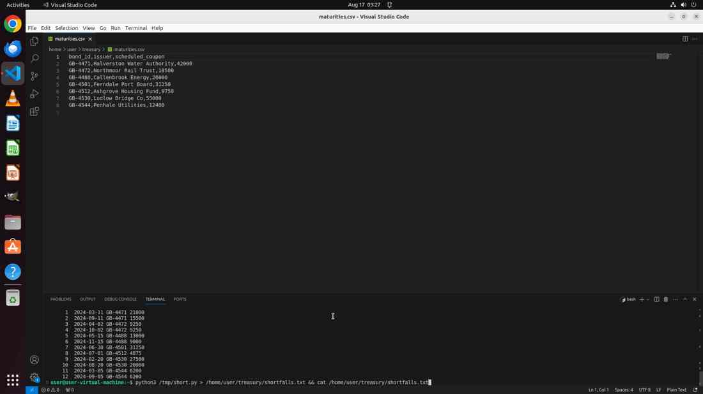
step 20 12:27:42
THINKINGThe command is typed but not yet executed (no trailing newline processed). Press Enter.
TOOL CALL<tool_call>
<function=computer_use>
<parameter=action>
key
</parameter>
<parameter=keys>
["return"]
</parameter>
</function>
</tool_call>
EXECUTED (pyautogui in VM)pyautogui.press("return")

step 21 12:27:55
THINKINGThe file was written and cat confirms the contents:
GB-4530 7500
GB-4471 5500
GB-4512 4875
GB-4488 4000
The file /home/user/treasury/shortfalls.txt now exists beside the other two files with one line per bond, ID and shortfall, largest first. Task complete.
ACTIONThe task is complete. I compared the maturity schedule (`maturities.csv`) with the payments log (`payments.log`) in `/home/user/treasury/`, summed the logged coupon payments per bond, and found those whose total came in under the scheduled coupon.
I wrote the results to a new plain text file, `/home/user/treasury/shortfalls.txt`, listing one line per bond (ID and shortfall), largest shortfall first:
- GB-4530 — 7500 (paid 47,500 of 55,000 scheduled)
- GB-4471 — 5500 (paid 36,500 of 42,000)
- GB-4512 — 4875 (paid 4,875 of 9,750)
- GB-4488 — 4000 (paid 22,000 of 26,000)
The other bonds (GB-4472, GB-4501, GB-4544) had logged payments exactly equal to their scheduled coupon, so they were excluded.
EXECUTED (pyautogui in VM)DONE
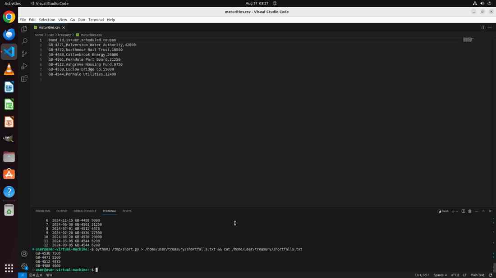